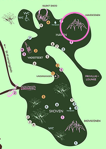

Emma Sehested Høeg
Torsdag 16:30
Skovscenen
Multitalentet Emma Sehested Høeg har for alvor cementeret sin indtræden som soloartist på den danske
musikscene i 2024 med adskillige udsolgte koncerter og det anmelderroste debutalbum ‘I Know All The Words
But I Can’t Say Goodbye’.
Sangerinden er kendt for at levere livekoncerter, hvor både det dramatiske og musikaliteten er på et særligt
højt niveau. Vi glæder os til at opleve Emma Sehested Høeg på Skovscenen under trækronerne i Christiansgaves
intime omgivelser, når hun inviterer os med ind i sit omfavnende, storslåede og cinematiske lydunivers.
